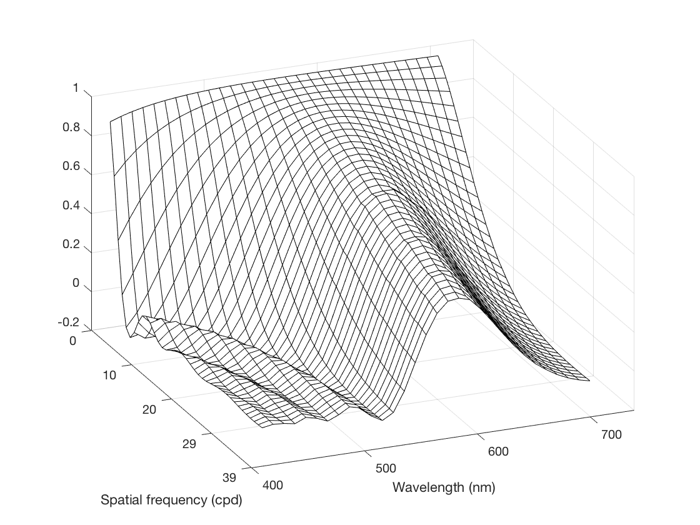
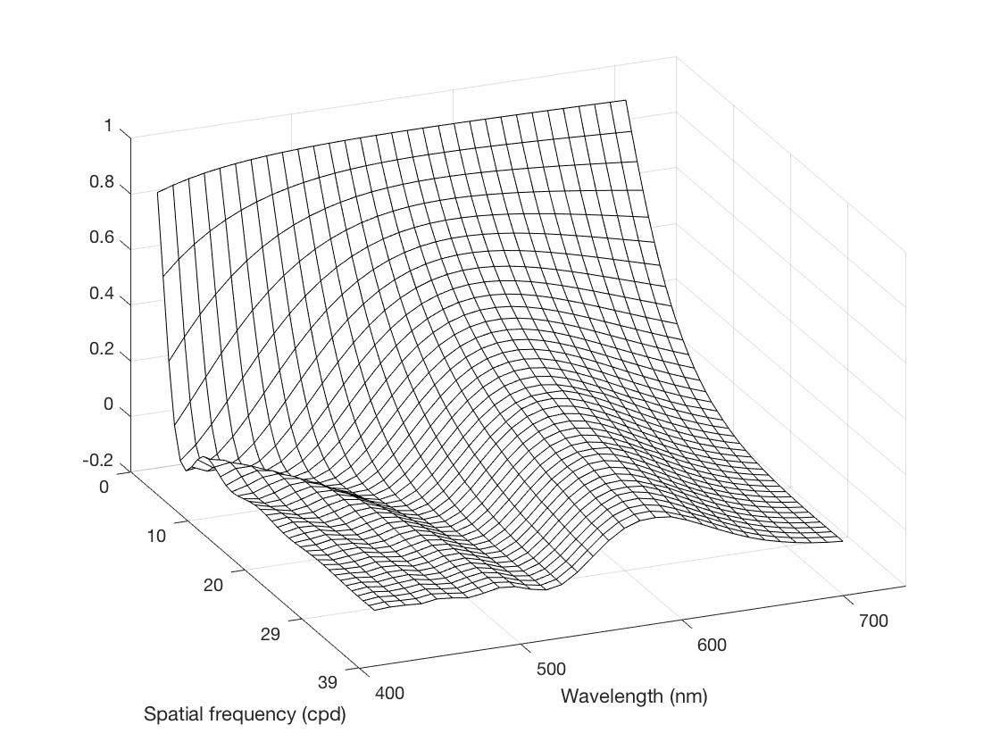
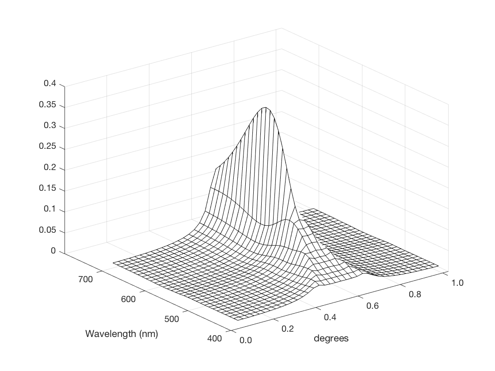
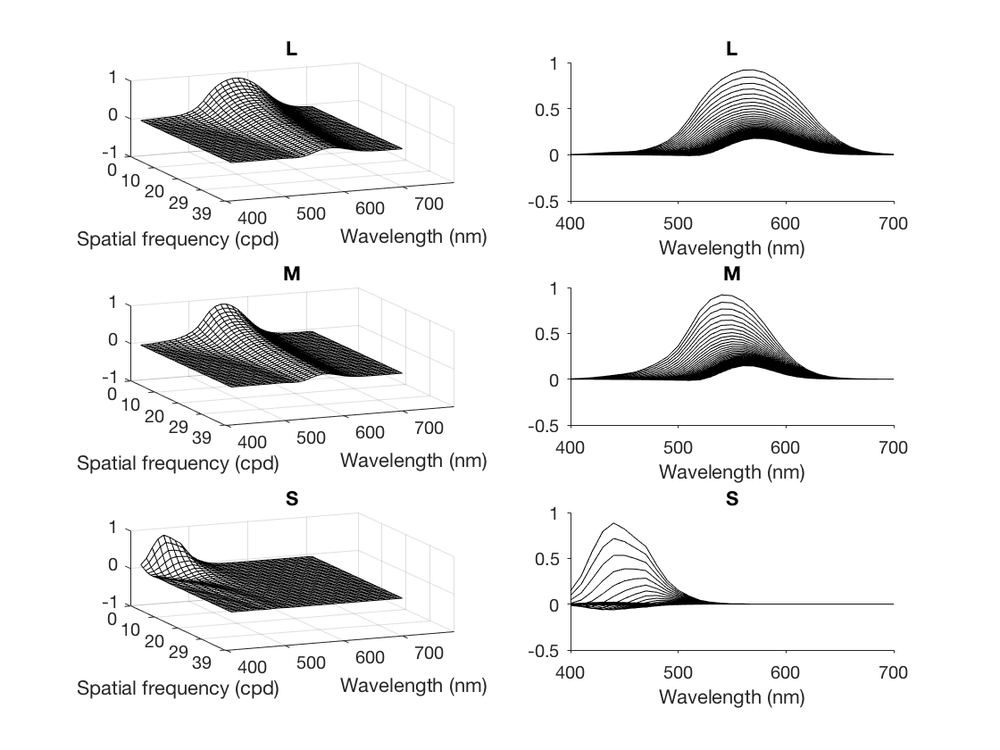
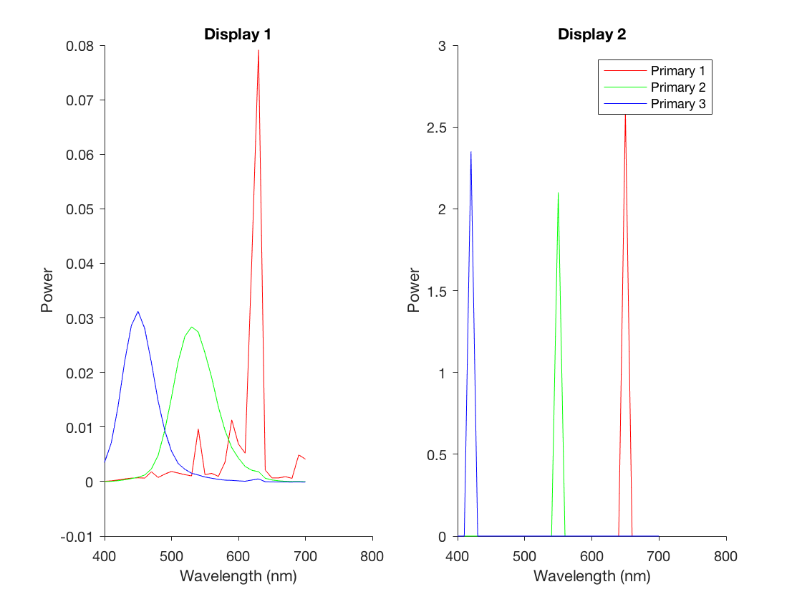
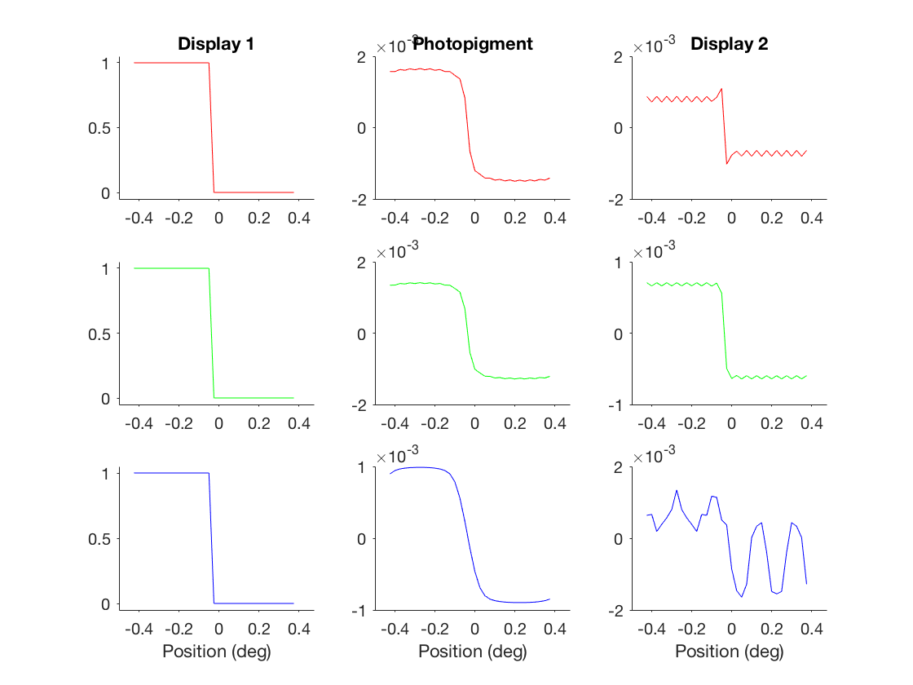
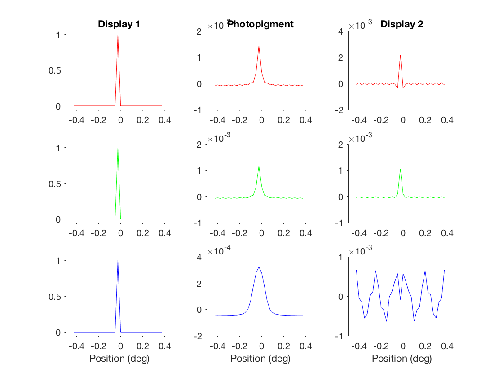
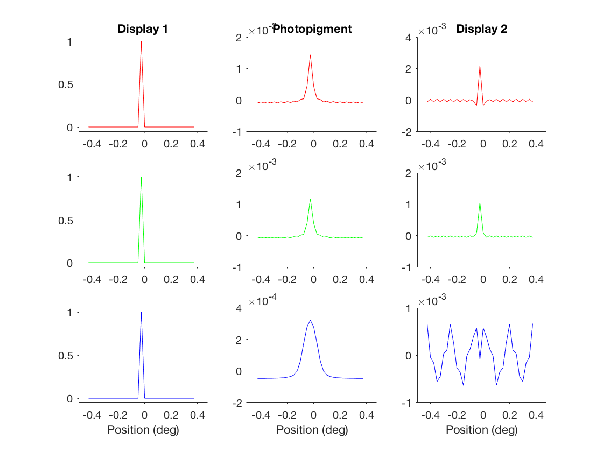

Color matching with chromatic aberration; Marimont & Wandell, 1994
When color matching experiments are performed with large uniform fields, we can typically ignore the effects of chromatic aberration imposed by the optics of the eye. Such experiments have been very successful in characterizing the relationship between the encoding of light by the photopigments and the physiological response (and spectral sensitivity distribution) of the photoreceptors. However when matching spatial patterns, we have to take into account that each wavelength incurs a different amount of defocus and that this defocus depends on the spatial pattern incident on the cornea (i.e., axial chromatic aberration).
This tutorial will guide you through an implementation of Marimont & Wandell's model of color matching for spatial patterns that considers the effect of chromatic aberration.
Contents
Parameter set-up
Thare are 7 parameters in this model:
% dx samples per degree % dLambda linearly spaced wavelength samples between 400 and 700 nm % dLambda linearly spaced wavelength samples between 400 and 700 nm % q 1x3 vector containing the variables q1, q2, and q3 for converting % defocus to optical path length error % defocus dioptric power of the unaccommodated eye % pupilRadius radius of the pupil in meters % degPreM multiplicative inverse of meters per degree % im nxm matrix of a 1-dimensional image. When n=3, each row is taken as % a different color channel. When n=1, the same image is repeated in % each color channel.
The default parameters will recreate the figures in Marimont & Wandell (1994). To use the defaults, simply run:
params = inputParams
params =
struct with fields:
dx: 40
dLambda: 31
q: [1.7312 0.6335 0.2131]
defocus: 59.9404
pupilRadius: 0.0015
degPerM: 3.4340e+03
im: [1×40 double]
space: [1×40 double]
lambda: [1×31 double]
freq: [1×40 double]
NOTE: The default image is a step function. The added, "space", "lambda", and "freq" fields contain the spatial extent, wavelength range, and spatial frequencies, respectively. The values in these fields depend on the parameters inputted.
Optical Transfer function (OTF)
Given the inputted parameters, we can calculate the defocus for different spatial frequencies at each wavelength (i.e., the OTF).
We set dispFig to 1 so that figures will be displayed.
dispFig = 1;
Then, we can input the parameters into the otf function to recreate Figure 2.
params = otf(params,dispFig);
NOTE: The params structure will be updated to include the OTF in a field titled "otf." By storing these new variables in the params structure, we can keep feeding the same params variable into each function.
params
params =
struct with fields:
dx: 40
dLambda: 31
q: [1.7312 0.6335 0.2131]
defocus: 59.9404
pupilRadius: 0.0015
degPerM: 3.4340e+03
im: [1×40 double]
space: [1×40 double]
lambda: [1×31 double]
freq: [1×40 double]
otf: [31×40 double]
Add wavelength-independent aberrations
In addition to axial chromatic aberration, there also exist wavlength-independent aberrations. Here, we modulate the OTF with these wavelength-independent aberrations to recreate Figure 3.
params = otf_indAberr(params,dispFig);
NOTE: The "otf" field in the params structure will be updated to contain the modulated OTF.
Linespread function
We can take the inverse Fourier transform of the OTF to generate the linespread function at each wavelength. This transform will recreate Figure 4.
params = otf2Linespread(params,dispFig);
NOTE: The params structure will now contain a "linespread" field containing the linespread functions.
Cone photopigment sensitivities
Now that we have a model of how different spatial frequencies are transferred through the optics, we can obtain the spectral sensitivities of the photopigments by projecting their spectral sensitivities (as measured via large uniform test fields; stored in cones.mat) onto the OTF.
This will recreate Figure 5.
params = otf2Cones(params,dispFig);
NOTE: The params structure will now contain a "cones" field containing the spectral sensitivities of each cone. This field will contain a 3 x dLambda matrix.
Color matching
Now that we have the sensitivity of each photopigment to a range of spatial frequencies and wavelengths, we can simulate the classical color matching experiments but with spatial patterns. To simulate a color matching experiment we need our spatial pattern and the two displays that we want to match. These displays are characterized by 3 x dLambda matrices containing spectral power distributions (SPD) of the primary light sources. 3 such matrices are stored in phosphors.mat so let's load those.
load phosphors
We will use displays p1 and p2 as these match the SPDs in Figure 6.
figure('Name','Display primaries'); disps = {p1 p2}; col = 'rgb'; for d = 1:length(disps) subplot(1,2,d); for j = 1:size(disps{d},1) plot(params.lambda*10^9,disps{d}(j,:),[col(j),'-']); hold on end title(sprintf('Display %i',d)); set(gca,'TickDir','out'); xlabel('Wavelength (nm)'); ylabel('Power'); box off end legend({'Primary 1' 'Primary 2' 'Primary 3'});
Given the primaries of display 1 and the resulting photopigment absorptions due to the inputted step pattern, we can obtain the matching pattern in display 2 by projecting the SPDs of each of the primaries onto the photopigments' response. This color-matched pattern can be obtained by running colorMatch as follows:
colorMatch(params,p1,p2,dispFig);
This recreates Figure 7a. However, note that the amplitude of the photopigment response and of the pattern in display 2 are different from those in Figure 7. This is presumably due to a difference in sampling rates (i.e., dx) between this demonstration and those used by the original authors.
Recreate Figure 7b
To demonstrate the flexibility of this implementation, let's recreate Figure 7b, in which the input image is an impulse function. To change the input image while keeping all the default parameters, all we need to do is run inputParams again, but this time, we must input a params structure with a field containing the new image:
im = zeros(1,params.dx);
im(floor(length(im)/2)) = 1;
clear params
params.im = im;
inputParams(params)
ans =
struct with fields:
im: [1×40 double]
dx: 40
dLambda: 31
q: [1.7312 0.6335 0.2131]
defocus: 59.9404
pupilRadius: 0.0015
degPerM: 3.4340e+03
space: [1×40 double]
lambda: [1×31 double]
freq: [1×40 double]
Notice that the image is now an impulse but all the other parameters are the same as before. Thus, when parameters are left unspecified when inputted into inputParams, the default paramaters are used.
With this new params structure, let's rerun the workflow that we've stepped through above. Instead of running through each function individually, we can just execute runColorMatch as this will call all the necessary functions.
runColorMatch(params,p1,p2,1);
 
 Figure 7b has been recreated.
END-OF-TUTORIAL